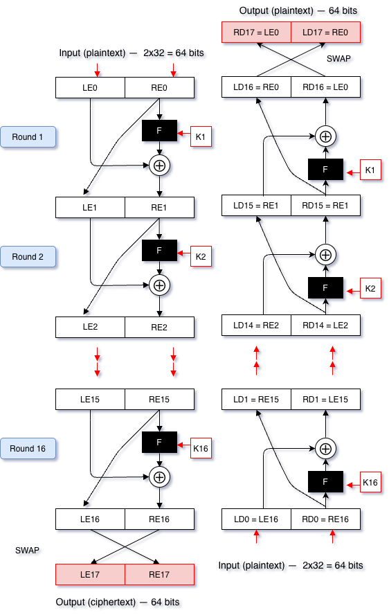
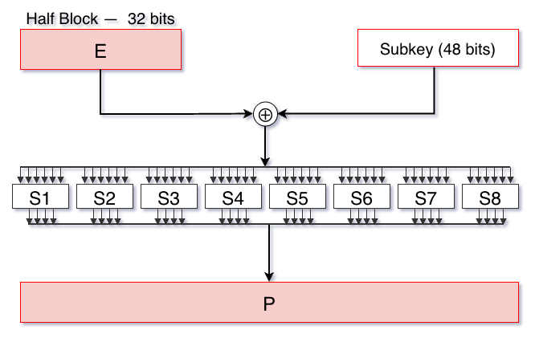

2 Block Ciphers — Fundamentals, Feistel, DES and 3DES
Introduction
The classical ciphers studied in the previous chapter operate on letters of a natural alphabet: they substitute them, they transpose them, but they always work with the structure of a language. A computer does not read letters; it reads sequences of bits. Modern ciphers start from this fact: the plaintext, whether text, image or sound, is always, ultimately, a binary sequence, and it is on that sequence that block ciphers operate.
This chapter introduces the structure common to the generality of modern block ciphers, the Feistel network, and two historical algorithms built upon it: DES, for decades the dominant standard, and 3DES, the extension created to prolong its useful life after DES was deemed insecure. The next chapter deals with AES, the algorithm that today occupies the place DES once held.
2.1 Foundations of Block Ciphers
2.1.1 What is a block cipher
A block cipher divides the plaintext into fixed-size blocks, typically 64 or 128 bits, and encrypts each block independently, always using the same key. Formally, for a block of \(n\) bits and a key \(K\), the encryption algorithm \(E_K\) is a bijective function:
\[E_K : \{0,1\}^n \rightarrow \{0,1\}^n\]
That is, for each key \(K\), \(E_K\) is a distinct permutation of the set of all possible blocks: every plaintext block has exactly one corresponding ciphertext block, and vice versa, which guarantees that decryption is always possible and unique.
This directly generalises the monoalphabetic cipher from the previous chapter, which was also a permutation, but of a 26-letter alphabet. A block cipher with 64-bit blocks is a permutation of a set with \(2^{64}\) elements, an immensely larger space, which by itself already hinders frequency analysis: instead of 26 possible symbols, there are \(2^{64}\) possible blocks, each occurring rarely enough that counting frequencies ceases to be useful.
2.1.2 The ideal cipher, and why it is impractical
If a block cipher is, at bottom, a permutation parameterised by the key, the most directly secure construction would be to choose, for each key, a completely arbitrary permutation between all input blocks and all output blocks, with no internal structure whatsoever that a cryptanalyst could exploit. This construction is called the ideal cipher, and the problem with it is not one of security, it is one of key size.
Formally, the encryption algorithm \(E_K\) of an \(n\)-bit block cipher is a function
\[E_K : \{0,1\}^n \rightarrow \{0,1\}^n\]
that maps each of the \(2^n\) possible input blocks to an output block, likewise of \(n\) bits. Consider the case \(n=4\): each input block is a value between 0000 and 1111, more conveniently written in hexadecimal, since a single hexadecimal digit represents exactly 4 bits. The 16 possible blocks correspond, one to one, to the digits 0 through F.
An arbitrary permutation of these 16 values is any bijective reassignment of each input to a distinct output, with no repeats. For example, the following three permutations are all valid, and completely different from one another:
Entrada: 0 1 2 3 4 5 6 7 8 9 A B C D E F
Permutação A (+5): 5 6 7 8 9 A B C D E F 0 1 2 3 4
Permutação B (livre): 5 D 2 9 0 B 7 E 3 F 1 8 6 4 A C
Permutação C (pares): 0 1 3 2 5 4 7 6 9 8 B A D C F EPermutation A is merely a shift — the same logic as the Caesar cipher, now over hexadecimal digits instead of letters. Permutations B and C follow no simple formula: they were chosen value by value, with no pattern whatsoever, only ensuring that each input has a different output and that no output repeats.
How many such permutations exist, in total? For the first input (0), there are 16 possible outputs; once that is chosen, 15 options remain for the next input (1), since the output chosen for 0 cannot repeat; then 14 for input 2; and so on, until only 1 option remains for the last input (F). The total is:
\[16 \times 15 \times 14 \times \cdots \times 1 = 16! \approx 2.09 \times 10^{13}\]
This number does not depend at all on the size of the key: it is merely the count of all the ways of shuffling 16 values, whether those values are hexadecimal digits, playing cards, or letters of an alphabet.
This is where the key-size problem comes in. If the key \(K\) were likewise 4 bits long, only 16 possible key values would exist — and each key, through the algorithm, can only determine one permutation. However clever the algorithm, 16 keys can never select more than 16 different permutations, out of a total of \(16! \approx 2.09\times10^{13}\): for instance, key 5 might select Permutation A, key 3 might select B, and so on, but only 16 possibilities are ever covered. The Caesar cipher is exactly this case: its 16 keys always select 16 shifts (like Permutation A), never a free permutation such as B or C. For the key to be able to reach any one of the \(16!\) permutations, and not merely a small subset chosen in advance, it needs, itself, to have many more than 4 bits.
How much larger, exactly? There are two answers to this question: the first gives the actual key size needed to address every possible permutation of 4-bit blocks onto 4-bit blocks; the second is an estimate that bounds that value from above.
Knowing that there are \(16!\) valid permutations, the number of bits \(x\) needed to index that many is the key size. So \(2^x = (16!)\), which gives \(x = \log_2(16!) \approx 45\) bits.
The second approach gives a more direct way of answering the question of key size, which is to imagine that the key is, literally, the complete substitution table. For example, for Permutation A (the “+5” one), the following table is obtained:
Entrada Saída (4 bits) Saída (Hex.)
0 → 0 1 0 1 (= 5)
1 → 0 1 1 0 (= 6)
2 → 0 1 1 1 (= 7)
3 → 1 0 0 0 (= 8)
4 → 1 0 0 1 (= 9)
5 → 1 0 1 0 (= A)
6 → 1 0 1 1 (= B)
7 → 1 1 0 0 (= C)
8 → 1 1 0 1 (= D)
9 → 1 1 1 0 (= E)
A → 1 1 1 1 (= F)
B → 0 0 0 0 (= 0)
C → 0 0 0 1 (= 1)
D → 0 0 1 0 (= 2)
E → 0 0 1 1 (= 3)
F → 0 1 0 0 (= 4)From the table we can see that the key size must be such that it can address a numeric string of 16 hexadecimal characters. It must therefore have a size of \(16\) characters. Since each character is 4 bits, the key size in bits is \(4 \times 16 = 64\), which corresponds to the area of the table shown:
\[\text{height} \times \text{width} = 16 \times 4 = 64 \text{ bits}\]
Generalising, for a block of \(n\) bits, the key of the ideal cipher needs
\[n \times 2^n \text{ bits}\]
For \(n=4\), this is only 64 bits, perfectly manageable. But for a block of \(n=64\) bits, a perfectly reasonable size for a real cipher:
\[64 \times 2^{64} = 2^6 \times 2^{64} = 2^{70} \approx 10^{21} \text{ bits}\]
A number with no practical application whatsoever: no system can generate, store, distribute, or even write down a key of this size. The ideal cipher is, therefore, impractical. Real block ciphers do not attempt to realise it directly; instead, they seek to approximate its unpredictable behaviour, by repeatedly combining, across several rounds, simple operations that are cheap to specify, until the final result is computationally indistinguishable from a genuinely arbitrary permutation. This is exactly what confusion and diffusion, introduced next, are for.
2.1.3 Confusion and diffusion
Claude Shannon, the same author who proved the perfect secrecy of the One-Time Pad, identified in 1949 two properties that a robust cipher must guarantee:
- Confusion: the relationship between the key and the ciphertext must be as complex and non-linear as possible, so as to hide any statistical pattern linking the two. In practice, this is achieved through non-linear substitution operations.
- Diffusion: the influence of each bit of the plaintext (and of each bit of the key) must spread across many bits of the ciphertext, such that changing a single input bit changes, on average, half of the output bits, in an apparently random fashion. In practice, this is achieved through permutation and bit-mixing operations.
Neither property, in isolation, is sufficient: substitution alone, as seen in the monoalphabetic cipher, is vulnerable to frequency analysis; transposition alone leaves frequency entirely intact. Modern block ciphers combine the two, repeatedly applying, across several rounds, a sequence of substitutions and permutations, until the final ciphertext betrays no useful statistical relationship with either the plaintext or the key.
2.2 The Feistel Network
Most classical block ciphers, DES included, organise these rounds according to a structure proposed by Horst Feistel, in the 1970s, while working at IBM. In a Feistel network, the block is split into two equal halves, \(L_i\) (left) and \(R_i\) (right), and each round \(i\) is applied as follows:

\[L_{i+1} = R_i\] \[R_{i+1} = L_i \oplus F(R_i, K_i)\]
where \(F\) is a round function, typically non-linear, parameterised by a subkey \(K_i\) derived from the main key, and \(\oplus\) denotes the bitwise XOR operation.
The fundamental property of a Feistel network is that decryption uses exactly the same structure as encryption, only with the subkeys applied in reverse order, and this holds true regardless of the function \(F\) chosen, even if \(F\) is not itself invertible. This considerably simplifies implementation: the same circuit or code serves both to encrypt and to decrypt, which would not necessarily be possible if \(F\) had to be both applied and inverted.

2.2.1 Example with a reduced network
To make this concrete, consider a drastically reduced version, with 8-bit blocks (4-bit halves) and the function \(F(R, K) = \text{ROL}_1(R) \oplus K\), where \(\text{ROL}_1\) rotates the 4 bits of \(R\) one place to the left. This function has no pretension of real security whatsoever, it serves only to illustrate the mechanism.
With plaintext \(L_0 = 1010\), \(R_0 = 0110\), and two subkeys \(K_1 = 0011\), \(K_2 = 1100\):
Round 1: \(F(R_0, K_1) = \text{ROL}_1(0110) \oplus 0011 = 1100 \oplus 0011 = 1111\) \(L_1 = R_0 = 0110 \qquad R_1 = L_0 \oplus F(R_0, K_1) = 1010 \oplus 1111 = 0101\)
Round 2: \(F(R_1, K_2) = \text{ROL}_1(0101) \oplus 1100 = 1010 \oplus 1100 = 0110\) \(L_2 = R_1 = 0101 \qquad R_2 = L_1 \oplus F(R_1, K_2) = 0110 \oplus 0110 = 0000\)
The ciphertext is \(L_2 R_2 = 01010000\). To decrypt, the same two rounds are applied, but with the subkeys in reverse order (\(K_2\) first, then \(K_1\)), recovering exactly \(L_0 = 1010\), \(R_0 = 0110\) — confirmed by direct computation. Note that at no point was it necessary to invert the function \(F\): only the order of the subkeys changed.
2.3 DES — Data Encryption Standard
DES (Data Encryption Standard) was developed by IBM, with contributions from the NSA, and adopted in 1977 as a United States federal standard (Stallings 2020). For nearly two decades, it was the most widely used symmetric cipher algorithm in the world.
DES is a Feistel network with the following characteristics:
- A block of 64 bits.
- An effective key of 56 bits (represented as 64 bits, of which 8 are parity bits, contributing nothing to security).
- 16 rounds, each with a 48-bit subkey derived from the main key through a scheme of rotations and permutations.
- A round function \(F\) built from bit expansion, XOR with the subkey, non-linear substitution through eight fixed tables (the S-boxes, the main source of confusion in the algorithm), and a final permutation.
- An initial permutation (IP) before the first round, and its inverse, the final permutation (FP), after the last, both fixed and contributing nothing to cryptographic security: they serve only to rearrange the input and output bits, a remnant of DES’s original hardware implementation.
The overall structure of DES is, therefore, exactly the Feistel network already described in the previous section, with \(n=64\) and 16 rounds. What is specific to DES, and does not follow from the Feistel structure itself, is the internal construction of the function \(F\):

2.3.1 The strength of DES
The key space of DES has \(2^{56} \approx 7.2 \times 10^{16}\) possible keys. This number seemed astronomically secure in 1977, but the growth of computational power made it increasingly vulnerable to a simple brute-force attack, exactly the same principle already discussed for the Caesar cipher, only with a larger key space. There was also, from early on, a second source of distrust: the S-boxes of DES, the component responsible for its confusion, were specified by the NSA without public justification of the design criteria, which fuelled decades of suspicion that they might hide a deliberate weakness, never confirmed, but also never entirely ruled out (Du 2022).
The fall of DES to brute force was documented by a series of public challenges run by RSA Security. In 1997, the DESCHALL project broke a DES-encrypted message in 96 days, using the idle cycles of volunteer computers spread across the Internet. In 1998, the distributed.net project repeated the feat in only 39 days, and the Electronic Frontier Foundation built a dedicated machine, Deep Crack, capable of doing it in about 56 hours, for a cost then under 250 thousand dollars. In 1999, the combination of distributed.net with Deep Crack reduced the time to 22 hours (Du 2022; Stallings 2020). DES was formally superseded by 3DES in 1999, and is obsolete today: it should not be used to protect new information, and is only found in legacy systems still awaiting replacement.
2.4 3DES — Triple DES
Faced with the weakness of DES, the most immediate solution, adopted in 1999 while a definitive successor was being prepared (this would turn out to be AES, presented in the next chapter), was to apply DES itself three times in a row, with different keys. 3DES (or Triple DES) encrypts each block according to the EDE scheme (Encrypt-Decrypt-Encrypt):
\[C = E_{K_3}(D_{K_2}(E_{K_1}(P)))\]
where \(E\) and \(D\) are the encryption and decryption operations of the original DES. The encrypt-decrypt-encrypt alternation, rather than three encryptions in a row, exists mainly for compatibility: with \(K_1 = K_2 = K_3\), 3DES reduces exactly to a single, ordinary DES encryption, allowing older systems to continue interoperating with newer ones.
Depending on the number of distinct keys used, 3DES offers:
- Three distinct keys (\(K_1, K_2, K_3\)): effective security of approximately 112 bits (not 168, owing to a type of attack known as meet-in-the-middle, which reduces the theoretical gain of applying three 56-bit keys).
- Two distinct keys (\(K_1 = K_3\)): effective security of approximately 80 bits, considered insufficient today.
3DES solved the immediate key-space problem, but inherited the remaining structural limitations of DES (among others, a small 64-bit block), and is about three times slower than a single DES encryption, since it repeats the original algorithm three times per block. For these reasons, NIST has recommended, since 2023, that 3DES no longer be used in new applications, reserving it only for maintaining compatibility with legacy systems (Stallings 2020). The next chapter introduces the algorithm that replaced it: AES.
2.5 Chapter Summary
This chapter introduced the fundamental structure of modern block ciphers:
- A block cipher is a permutation of fixed-size bit blocks, parameterised by the key, generalising the idea of permutation already seen in the monoalphabetic cipher, but over a much larger space
- The ideal cipher, which would realise that permutation in a completely arbitrary way, would require a key of \(n \times 2^n\) bits, impractical for any realistic block size; real block ciphers approximate its behaviour by another route
- Confusion (a complex key-ciphertext relationship) and diffusion (the spreading of each bit’s influence), proposed by Shannon, are the two properties that modern block ciphers combine across several rounds to achieve that approximation
- The Feistel network organises these rounds so that decryption uses exactly the same structure as encryption, with the subkeys in reverse order, even when the round function \(F\) is not itself invertible
- DES, the dominant standard between 1977 and 1999, has a 64-bit block, an effective 56-bit key and 16 Feistel rounds; its small key space made it vulnerable to brute force (from 96 days, in 1997, to 22 hours, in 1999), and it is obsolete today
- 3DES, adopted in 1999, applies DES three times (the EDE scheme), extending effective security to about 112 bits, at the cost of being about three times slower; it too is being phased out
2.6 Discussion Question
In a Feistel network, the function \(F\) does not need to be invertible for the whole system to be reversible. What practical advantage does this bring to whoever designs the algorithm, compared with a cipher in which the central function itself would have to be invertible?